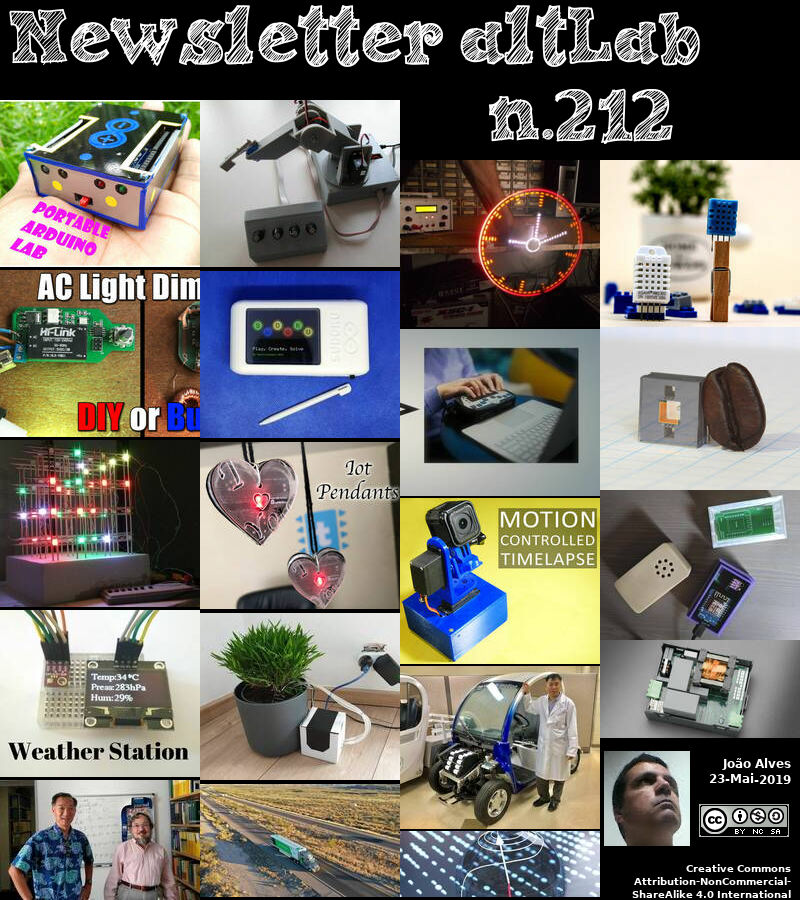

2019-05-23 - Nº 212


Editorial
Esta é a Newsletter Nº 212 que se apresenta com o mesmo formato que as anteriores. Se gostar da Newsletter partilhe-a!
Todas as Newsletters encontram-se indexadas no link.
Esta Newsletter tem os seguintes tópicos:
Faz hoje anos que nascia, em 1779, Paul Moody. Este inventor e mecânico de máquinas têxteis norte-americano, colaborou com Francis Cabot Lowell, o principal fundador de uma fábrica têxtil da Boston Manufacturing Company em Waltham, Massachusetts. Moody supervisionou as operações da fábrica, mas também trabalhou com a Lowell para desenvolver um tear eléctrico eficiente, o primeiro construído nos EUA (1814), o aparato de fiação “fuso morto” e outras inovações. Em 1823, tornou-se investidor e começou a trabalhar na recém-fundada Merrimack Company, em Lowell, Massacusetts, para fabricar chita. Contribuindo com um número substancial de melhorias patenteadas em máquinas têxteis, ele foi importante no desenvolvimento da indústria têxtil na Nova Inglaterra.
Faz também anos hoje que nascia, em 1908, John Bardeen. Este físico norte-americano recebeu o Prémio Nobel de Física em 1956 e 1972. Ele partilhou o prémio de 1956 com William B. Shockley e Walter H. Brattain pela sua invenção conjunta do transístor. Com Leon N. Cooper e John R. Schrieffer, ele recebeu o prémio de 1972 pelo desenvolvimento da teoria dos super-condutores, geralmente chamada de teoria BCS.
Faz igualmente anos hoje que nascia, em 1917, Edward Norton Lorenz. Este matemático e meteorologista norte-americano ficou conhecido por apontar o "efeito borboleta", segundo o qual a teoria do caos prevê que "estados iniciais levemente diferentes podem evoluir para estados consideravelmente diferentes". No seu artigo de 1963 no Journal of Atmospheric Sciences, ele citou o bater de asas de uma gaivota, como capaz de mudar o estado da atmosfera, mesmo de maneira tão trivial, pode resultar em enormes mudanças no resultado dos padrões climáticos. Assim, a previsão meteorológica de longo alcance torna-se quase impossível. Ele determinou esse resultado inesperado em 1961 enquanto executava uma simulação de computador do clima que dava resultados completamente diferentes com pequenas alterações nos dados de entrada.
Por fim, faz anos hoje que nascia, em 1934, Robert Moog. Este engenheiro e inventor norte-americano deu um avançou na música electrónica com seu sintetizador Moog. A sua paixão pela construção de circuitos electrónicos começou na sua juventude e, aos 14 anos, ele construiu um theremin. Enquanto pós-graduado, Moog desenvolveu o seu primeiro sintetizador electrónico analógico, completo com rodas de controle para criar um amplo espectro de modificações de formas de onda sonoras geradas a partir de circuitos electrónicos de osciladores. Na década de 1960, ele tinha um modelo portátil, o Minimoog, que fornecia a muitos grupos de rock sons distintos. Em 1968, Walter (mais tarde Wendy) Carlos ganhou um Grammy por Switched on Bach, com todas as faixas de instrumento tocadas inteiramente num sintetizador Moog.
Nesta semana que passou a NASA anunciou que vai voltar à Lua. Numa das primeiras etapas dos planos de exploração lunar da agência Artemis, a NASA anunciou na quinta-feira a selecção da Maxar Technologies, anteriormente SSL, em Westminster, Colorado, para desenvolver e demonstrar recursos de potência, propulsão e comunicações para o portal lunar da NASA. Encarregados de voltar à Lua dentro de cinco anos, os planos de exploração lunar da NASA baseiam-se numa abordagem em duas fases: a primeira está focada na velocidade - aterrar na Lua em 2024 - enquanto a segunda estabelecerá uma presença humana sustentada Lua até 2028. O que aprendermos com esta missão será usado para nos prepararmos para enviar astronautas a Marte.
Na Newsletter desta semana apresentamos diversos projetos de maker. É apresentada a revista Hackspace Magazine nº19 de Junho.
 João Alves ([email protected])
João Alves ([email protected])
O conteúdo da Newsletter encontra-se sob a licença  Creative Commons Attribution-NonCommercial-ShareAlike 4.0 International License.
Creative Commons Attribution-NonCommercial-ShareAlike 4.0 International License.
Novidades da Semana
NASA Awards Artemis Contract for Lunar Gateway Power, Propulsion
"In one of the first steps of the agency’s Artemis lunar exploration plans, NASA announced on Thursday the selection of Maxar Technologies, formerly SSL, in Westminster, Colorado, to develop and demonstrate power, propulsion and communications capabilities for NASA’s lunar Gateway. “The power and propulsion element is the foundation of Gateway and a fine example of how partnerships with U.S. companies can help expedite NASA’s return to the Moon with the first woman and next man by 2024,” said NASA Administrator Jim Bridenstine. “It will be the key component upon which we will build our lunar Gateway outpost, the cornerstone of NASA’s sustainable and reusable Artemis exploration architecture on and around the Moon.” The power and propulsion element is a high-power, 50-kilowatt solar electric propulsion spacecraft – three times more powerful than current capabilities. As a mobile command and service module, the Gateway provides a communications relay for human and robotic expeditions to the lunar surface, starting at the Moon’s South Pole. This firm-fixed price award includes an indefinite-delivery/indefinite-quantity portion and carries a maximum total value of $375 million. The contract begins with a 12-month base period of performance and is followed by a 26-month option, a 14-month option and two 12-month options." [...]
Outras Notícias
What's new at Maker Faire Bay Area 2019
"It wouldn’t be a Maker Faire Bay Area without some exciting announcements! Designed with makers in mind, the new Nano represents a small, powerful and affordable solution for everyday projects. Retaining Arduino’s quality and reliability, they make it easier than ever to turn your project ideas into reality. They are compatible with classic Arduino boards, have low energy consumption, and are equipped with more powerful processors. The family is comprised of four different boards: Arduino Nano Every – perfect for everyday projects. (Pre-order here with headers or here without headers) Arduino Nano 33 IoT – small, secure, and Internet-connected." [...]
CircuitPython 4.0.1 released!
"4.0.1 is our first bugfix release of 4.x and features fixes for two bugs. Download it now from circuitpython.org. See here for the full release notes. 4.0.0 features a port to the Nordic nRF52840 microcontroller, including support as a BLE beacon or peripheral (bleio), extensive new support for pixel-based displays (displayio) (guide here), which will show CircuitPython output on the display, USB MIDI support and messages translated into multiple languages. Current languages are Chinese (Pinyin), English, French, German, Indonesian, Italian, Polish, Spanish, and Tagalog (Filipino). Thank you to the many contributors who make CircuitPython excellent!" [...]
Self-driving trucks begin mail delivery test for U.S. Postal Service
"The U.S. Postal Service on Tuesday started a two-week test transporting mail across three Southwestern states using self-driving trucks, a step forward in the effort to commercialize autonomous vehicle technology for hauling freight. San Diego-based startup TuSimple said its self-driving trucks will begin hauling mail between USPS facilities in Phoenix and Dallas to see how the nascent technology might improve delivery times and costs. A safety driver will sit behind the wheel to intervene if necessary and an engineer will ride in the passenger seat. If successful, it would mark an achievement for the autonomous driving industry and a possible solution to the driver shortage and regulatory constraints faced by freight haulers across the country. The pilot program involves five round trips, each totaling more than 2,100 miles (3,380 km) or around 45 hours of driving." [...]
HPE to acquire supercomputing leader Cray
"Accelerates HPE's strategy to tackle customers' most data-intensive challenges by combining deep supercomputing talent and cutting-edge technologies - Establishes the most comprehensive end-to-end portfolio across compute, storage, interconnect, software and services in the fast growing High Performance Computing and Artificial Intelligence segments - Creates opportunity for significant economic upside through enhanced growth and profitability San Jose, Calif., and Seattle, Wash., May 17, 2019 – Hewlett Packard Enterprise (NYSE:HPE) and Cray Inc. (Nasdaq: CRAY), a global supercomputer leader, today announced that the companies have entered into a definitive agreement under which HPE will acquire Cray for $35.00 per share in cash, in a transaction valued at approximately $1.3 billion, net of cash. "Answers to some of society's most pressing challenges are buried in massive amounts of data," said Antonio Neri, President and CEO, HPE. "Only by processing and analyzing this data will we be able to unlock the answers to critical challenges across medicine, climate change, space and more. Cray is a global technology leader in supercomputing and shares our deep commitment to innovation. By combining our world-class teams and technology, we will have the opportunity to drive the next generation of high performance computing and play an important part in advancing the way people live and work." The Explosion of Data is Driving Strong HPC Growth The explosion of data from artificial intelligence, machine learning, and big data analytics and evolving customer needs for data-intensive workloads are driving a significant expansion in HPC." [...]
Espressif Announces the Release of ESP32-S2 Secure Wi-Fi MCU
"Espressif announces the release of the ESP32-S2 Secure Wi-Fi MCU, which is a highly integrated, low-power, 2.4 GHz Wi-Fi Microcontroller SoC supporting Wi-Fi HT40 and 43 GPIOs. Based on Xtensa® single-core 32-bit LX7 processor, ESP32-S2 can be clocked at up to 240 MHz. ESP32-S2 is a highly integrated, low-power, 2.4 GHz Wi-Fi Microcontroller SoC supporting Wi-Fi HT40 and 43 GPIOs. Based on Xtensa® single-core 32-bit LX7 processor, it can be clocked at up to 240 MHz. With state-of-the-art power management and RF performance, IO capabilities and security features, ESP32-S2 is an ideal choice for a wide variety of IoT or connectivity-based applications, including smart home and wearables. With an integrated 240 MHz Xtensa® core, ESP32-S2 is sufficient for building the most demanding connected devices without requiring external MCUs." [...]
Microsoft and the BMW Group launch the Open Manufacturing Platform
"Companies are partners in a new initiative to drive open industrial IoT development and help grow a community to build future Industry 4.0 solutions Technology framework and open community to share smart factory solutions across the automotive and manufacturing sectors to significantly accelerate future industrial IoT developments. Utilizing industrial use cases and sample code, community members and partners will have the capability to develop their own services and solutions. Built on the Microsoft Azure industrial IoT cloud platform, the Open Manufacturing Platform is intended to provide a reference architecture with open source components based on open industrial standards and an open data model. By the end of 2019, the goal is to have an initial set of four to six partners in place and a minimum of 15 use cases rolled out into select production environments. Manufacturers and suppliers, including companies from outside the automotive industry, will be encouraged to join the community. Today, at Hannover Messe, Microsoft Corp. and the BMW Group announced a new community initiative to enable faster, more cost-effective innovation in the manufacturing sector." [...]
Ciência e Tecnologia
Carnegie Mellon Chemists Manipulate the Quantum States of Gold Nanoclusters
"Researchers from Carnegie Mellon University’s Department of Chemistry have found a way to control the lifetime of the quantum states of gold nanoclusters by three orders of magnitude, which could lead to improvements in solar cell and photocatalysis technologies. Their study is published in the April 18 issue of Science. Excited quantum states occur when light is absorbed by a particle and the energy from that light is temporarily stored within the particle, making its energy higher than its ground state. The energy decays quickly and can be lost as heat in the span of a nanosecond, or one billionth of a second. Extending this quantum state could provide researchers with more time and opportunity to harness the stored energy. Carnegie Mellon Chemistry Professor Rongchao Jin is world renowned for developing precisely sized gold nanoparticles." [...]
Polymers jump through hoops on pathway to sustainable materials
"Recyclable plastics that contain ring-shaped polymers may be a key to developing sustainable synthetic materials. Despite some promising advances, researchers said, a full understanding of how to processes ring polymers into practical materials remains elusive. In a new study, researchers identified a mechanism called “threading” that takes place when a polymer is stretched – a behavior not witnessed before. This new insight may lead to new processing methods for sustainable polymer materials. Most consumer plastics are blends of linear polymers. The concept of plastics made purely from ring polymers – molecules that form a closed ring – presents an enticing opportunity for sustainability, as shown by the Autonomous Materials Systems group at the Beckman Institute for Advanced Science and Technology." [...]
Manipulating atoms one at a time with an electron beam
"New method could be useful for building quantum sensors and computers. The ultimate degree of control for engineering would be the ability to create and manipulate materials at the most basic level, fabricating devices atom by atom with precise control. Now, scientists at MIT, the University of Vienna, and several other institutions have taken a step in that direction, developing a method that can reposition atoms with a highly focused electron beam and control their exact location and bonding orientation. The finding could ultimately lead to new ways of making quantum computing devices or sensors, and usher in a new age of “atomic engineering,” they say. The advance is described today in the journal Science Advances, in a paper by MIT professor of nuclear science and engineering Ju Li, graduate student Cong Su, Professor Toma Susi of the University of Vienna, and 13 others at MIT, the University of Vienna, Oak Ridge National Laboratory, and in China, Ecuador, and Denmark. “We’re using a lot of the tools of nanotechnology,” explains Li, who holds a joint appointment in materials science and engineering." [...]
New Power Supply Unit Lets Electrical Devices Live Longer
"Scientists Have Developed a New Control Method that Significantly Increases the Service Life of End Devices. From the charging unit for smartphones to the power supply of the laptop or washing machine to LED lights or charging stations of electric cars – switching power supplies are omnipresent in electrical devices. They convert the alternating current from the house line into the direct current needed by the device. The problem: power supplies are susceptible to errors, which also reduces the service life of end devices. Researchers of Karlsruhe Institute of Technology (KIT) have now developed a power supply unit with a significantly increased service life. Switching supply units used today are of light weight and compact design, but also susceptible to errors due to the incorporated electrolyte capacitors." [...]
Squid skin inspires creation of next-gen heat regulating blanket
"Drawing design inspiration from the skin of stealthy sea creatures, engineers at the University of California, Irvine have developed a next-generation, adaptive space blanket that gives users the ability to control their temperature. The innovation is detailed in a study published today in Nature Communications. “Ultra-lightweight space blankets have been around for decades — you see marathon runners wrapping themselves in them to prevent the loss of body heat after a race — but the key drawback is that the material is static,” said co-author Alon Gorodetsky, UC Irvine associate professor of chemical & biomolecular engineering. “We’ve made a version with changeable properties so you can regulate how much heat is trapped or released.” The UC Irvine researchers took design cues from various species of squids, octopuses and cuttlefish that use their adaptive, dynamic skin to thrive in aquatic environments. A cephalopod’s unique ability to camouflage itself by rapidly changing color is due, in part, to skin cells called chromatophores that can instantly change from minute points to flattened disks. “We use a similar concept in our work, where we have a layer of these tiny metal ‘islands’ that border each other,” said lead author Erica Leung, a UC Irvine graduate student in chemical & biomolecular engineering." [...]
Ultra-Clean Fabrication Platform Produces Nearly Ideal 2D Transistors
"Columbia engineers develop a clean, damage-free fabrication process that creates pristine transistors made from 2D material stacks. Semiconductors, which are the basic building blocks of transistors, microprocessors, lasers, and LEDs, have driven advances in computing, memory, communications, and lighting technologies since the mid-20th century. Recently discovered two-dimensional (2D) materials, which feature many superlative properties, have the potential to advance these technologies, but creating 2D devices with both good electrical contacts and stable performance has proved challenging. Researchers at Columbia Engineering report that they have demonstrated a nearly ideal transistor made from a two-dimensional material stack—with only a two-atom-thick semiconducting layer—by developing a completely clean and damage-free fabrication process. Their method shows vastly improved performance compared to 2D semiconductors fabricated with a conventional process, and could provide a scalable platform for creating ultra-clean devices in the future. The study was published today in Nature Electronics." [...]
Wearable Cooling and Heating Patch Could Serve as Personal Thermostat and Save Energy
"Engineers at the University of California San Diego have developed a wearable patch that could provide personalized cooling and heating at home, work, or on the go. The soft, stretchy patch cools or warms a user’s skin to a comfortable temperature and keeps it there as the ambient temperature changes. It is powered by a flexible, stretchable battery pack and can be embedded in clothing. Researchers say wearing it could help save energy on air conditioning and heating. The work is published May 17 in the journal Science Advances. “This type of device can improve your personal thermal comfort whether you are commuting on a hot day or feeling too cold in your office,” said Renkun Chen, a professor of mechanical and aerospace engineering at UC San Diego who led the study." [...]
Energy free superfast computing invented by scientists using light pulses
"Superfast data processing using light pulses instead of electricity has been created by scientists. The invention uses magnets to record computer data which consume virtually zero energy, solving the dilemma of how to create faster data processing speeds without the accompanying high energy costs. Today’s data centre servers consume between 2 to 5% of global electricity consumption, producing heat which in turn requires more power to cool the servers. The problem is so acute that Microsoft has even submerged hundreds of its data centre services in the ocean in an effort to keep them cool and cut costs. Most data are encoded as binary information (0 or 1 respectively) through the orientation of tiny magnets, called spins, in magnetic hard-drives. The magnetic read/write head is used to set or retrieve information using electrical currents which dissipate huge amounts of energy." [...]
NIST Team Demonstrates Heart of Next-Generation Chip-Scale Atomic Clock
"Physicists at the National Institute of Standards and Technology (NIST) and partners have demonstrated an experimental, next-generation atomic clock—ticking at high “optical” frequencies—that is much smaller than usual, made of just three small chips plus supporting electronics and optics. Described in Optica, the chip-scale clock is based on the vibrations, or “ticks,” of rubidium atoms confined in a tiny glass container, called a vapor cell, on a chip. Two frequency combs on chips act like gears to link the atoms’ high-frequency optical ticks to a lower, widely used microwave frequency that can be used in applications. The chip-based heart of the new clock requires very little power (just 275 milliwatts) and, with additional technology advances, could potentially be made small enough to be handheld. Chip-scale optical clocks like this could eventually replace traditional oscillators in applications such as navigation systems and telecommunications networks and serve as backup clocks on satellites. “We made an optical atomic clock in which all key components are microfabricated and work together to produce an exceptionally stable output,” NIST Fellow John Kitching said." [...]
Mathematicians revive abandoned approach to the Riemann Hypothesis
"Many ways to approach the Riemann Hypothesis have been proposed during the past 150 years, but none of them have led to conquering the most famous open problem in mathematics. A new paper in the Proceedings of the National Academy of Sciences (PNAS) suggests that one of these old approaches is more practical than previously realized. "In a surprisingly short proof, we've shown that an old, abandoned approach to the Riemann Hypothesis should not have been forgotten," says Ken Ono, a number theorist at Emory University and co-author of the paper. "By simply formulating a proper framework for an old approach we've proven some new theorems, including a large chunk of a criterion which implies the Riemann Hypothesis. And our general framework also opens approaches to other basic unanswered questions." The paper builds on the work of Johan Jensen and George Pólya, two of the most important mathematicians of the 20th century." [...]
Clean fuel cells could be cheap enough to replace gas engines in vehicles
"Advancements in zero-emission fuel cells could make the technology cheap enough to replace traditional gasoline engines in vehicles, according to researchers at the University of Waterloo. The researchers have developed a new fuel cell that lasts at least 10 times longer than current technology, an improvement that would make them economically practical, if mass-produced, to power vehicles with electricity. “With our design approach, the cost could be comparable or even cheaper than gasoline engines,” said Xianguo Li, director of the Fuel Cell and Green Energy Lab at Waterloo. “The future is very bright. This is clean energy that could boom.” Researchers initially concentrated on hybrid vehicles, which now have gas engines as well as batteries due to issues involving limited driving range and long charging times. Existing fuel cells could theoretically replace those gas engines, which power generators to recharge batteries while hybrid vehicles are in operation, but are impractical because they are too expensive." [...]

Driverless cars working together can speed up traffic by 35 percent
"A fleet of driverless cars working together to keep traffic moving smoothly can improve overall traffic flow by at least 35 percent, researchers have shown. The researchers, from the University of Cambridge, programmed a small fleet of miniature robotic cars to drive on a multi-lane track and observed how the traffic flow changed when one of the cars stopped. When the cars were not driving cooperatively, any cars behind the stopped car had to stop or slow down and wait for a gap in the traffic, as would typically happen on a real road. A queue quickly formed behind the stopped car and overall traffic flow was slowed. However, when the cars were communicating with each other and driving cooperatively, as soon as one car stopped in the inner lane, it sent a signal to all the other cars. Cars in the outer lane that were in immediate proximity of the stopped car slowed down slightly so that cars in the inner lane were able to quickly pass the stopped car without having to stop or slow down significantly." [...]
Record-shattering underwater sound
"Researchers produced an underwater sound with an intensity that eclipses that of a rocket launch while investigating what happens when they blast tiny jets of water with X-ray laser pulses. A team of researchers has produced a record-shattering underwater sound with an intensity that eclipses that of a rocket launch. The intensity was equivalent to directing the electrical power of an entire city onto a single square meter, resulting in sound pressures above 270 decibels. The team, which included researchers from the Department of Energy’s SLAC National Accelerator Laboratory, published their findings on April 10 in Physical Review Fluids. Using the Linac Coherent Light Source (LCLS), SLAC’s X-ray laser, the researchers blasted tiny jets of water with short pulses of powerful X-rays. They learned that when the X-ray laser hit the jet, it vaporized the water around it and produced a shockwave." [...]
Producing electricity at estuaries using light and osmosis
"Researchers at EPFL are working on a technology to exploit osmotic energy – a source of power that’s naturally available at estuaries, where fresh water comes into contact with seawater. In a laboratory experiment, the team reproduced the real-world conditions that occur where rivers meet the sea (pH and salt concentration) and showed that, by shining light on a system comprising salt, water and a membrane three atoms thick, it was possible to optimize electricity production. Most renewable power technologies are weather dependent. Wind farms can only operate when there’s a breeze, and solar power plants rely on sunlight. Researchers at EPFL are working on a method to capture an energy source that’s constantly available at river estuaries: osmotic power, also known as blue energy. Osmosis is a natural process whereby molecules migrate from a concentrated to a more dilute solution across a semi-permeable membrane in order to balance the concentrations." [...]
Quantum rebar: Quantum dots enhance stability of solar-harvesting perovskite crystals
"U of T Engineering researchers have combined two emerging technologies for next-generation solar power — and discovered that each one helps stabilize the other. The resulting hybrid material is a major step toward reducing the cost of solar power while multiplying the ways it can be used. Today virtually all solar cells are made of high-purity silicon. It’s a well-established technology, and in recent years the manufacturing cost has dropped significantly due to economies of scale. Nevertheless, silicon has an upper limit to its efficiency. A team led by Professor Ted Sargent (ECE) is pursuing complementary materials that can enhance the solar-harvesting potential of silicon by absorbing wavelengths of light that silicon does not." [...]
Researchers gain key insight into solar material's soaring efficiency
"The rows of blue solar panels that dot landscapes and rooftops are typically made out of crystalline silicon, the workhorse semiconductor found in virtually every electronic device. Over the last decade, Colorado State University researchers have led pioneering studies into improving the performance and cost of solar energy by fabricating and testing new materials that extend beyond the capabilities of silicon. They have focused on a material that shows promise for replacing silicon, called cadmium telluride. In collaboration with partners at Loughborough University in the United Kingdom, researchers at CSU’s National Science Foundation-supported Next Generation Photovoltaics Center have reported a key breakthrough in how the performance of cadmium telluride thin-film solar cells is improved even further by the addition of another material, selenium. Their results were published in the journal Nature Energy earlier this month and are the subject of a “News and Views” article. “Our paper goes right to the fundamental understanding of what happens when we alloy selenium to cadmium telluride,” said Kurt Barth, a director of the Next Generation Photovoltaics Center and an associate research professor in the Department of Mechanical Engineering." [...]
A quantum leap in particle simulation
"A group of scientists at the Department of Energy’s Fermilab has figured out how to use quantum computing to simulate the fundamental interactions that hold together our universe. In a paper published in Physical Review Letters, Fermilab researchers fill a conspicuous gap in modeling the subatomic world using quantum computers, addressing a family of particles that, until recently, has been relatively neglected in quantum simulations. The fundamental particles that make up our universe can be divided into two groups: particles called fermions, which are the building blocks of matter, and particles called bosons, which are field particles and tug on the matter particles. In recent years, scientists have successfully developed quantum algorithms to compute systems made of fermions. But they’ve had a much tougher time doing the same for boson systems. For the first time, Fermilab scientist Alexandru Macridin has found a way to model systems containing both fermions and bosons on general-purpose quantum computers, opening a door to realistic simulations of the subatomic realm." [...]
Interactive quantum chemistry in virtual reality
"Scientists from the University of Bristol’s Intangible Realities Laboratory (IRL) and ETH Zurich have used virtual reality and artificial intelligence algorithms to learn the details of chemical change. In a cover article published today in The Journal of Physical Chemistry, researchers across the University of Bristol and ETH Zurich describe how advanced interaction and visualisation frameworks using virtual reality (VR) enable humans to train machine-learning algorithms and accelerate scientific discovery. The team describe their work designing a state-of-the-art open-source VR software framework which can carry out ‘on-the-fly’ quantum mechanics calculations. It allows research scientists to explore sophisticated physics models of complex molecular rearrangements which involve the making and breaking of chemical bonds, the first time that virtual reality has been used to enable such a thing. The team used their interactive VR system to ‘teach’ quantum chemistry to neural networks. Lead author Silvia Amabilino, who works between the IRL and Bristol’s Centre for Computational Chemistry, said “Generating datasets to teach quantum chemistry to machines is a longstanding challenge." [...]
How to program materials
"Can the properties of composite materials be predicted? Empa scientists have mastered this feat and thus can help achieve research objectives faster. This leads, for instance, to better recycling techniques and electrically conductive synthetic materials for the solar industry. Ali Gooneie simulates on his computer what holds the world together right at its very core: atoms, molecules, molecular chains and bundles – then lumps and fibers, which emerge thereof. With his calculations, the Empa researcher can also explain properties we can feel with our fingertips: smooth and rough surfaces, flexible and rigid materials, heat-conductive substances and insulators. Many of these properties have their origin deep inside the materials." [...]
Documentação
A documentação é parte essencial do processo de aprendizagem e a Internet além de artigos interessantes de explorar também tem alguma documentação em formato PDF interessante de ler. Todos os links aqui apresentados são para conteúdo disponibilizado livremente pelo editor do livro.
HackSpace magazine #19
"Robots! We're living in the 2019, but we don't yet have robot butlers. We can't get you all the way to your own electronic servant, but this month we show you how to build your own walking robot. What you do with it is up to you. Inside the Liverpool MakeFest Polystyrene modelling Particle Mesh And much, much more! " [...]
Projetos Maker
Diversos Projetos interessantes.
Beginners Guide to Use DHT11/DHT22 Sensors W/ Arduino
"In this tutorial, you will learn how to set up DHT11 and DHT22 sensors, and measure the environment temperature and humidity. What You Will Learn: DHT11 and DHT22 features and differences DHT11 and DHT22 structure How to set up DHT11 and DHT22 sensors with Arduino" [...]
ESP32 autoreset
"This little project utilises an ATtiny9 to automatically reset the ESP32 into bootloader mode. This little project utilises an ATtiny9 to reset an ESP32 into bootmode. It is used when programming the ESP32 with the Arduino IDE. I thought it was a bit annoying that I had to manually put the ESP32 in to bootloader mode by pressing the buttons. So this hack utilises an ATtiny9 the micro sized 6 pin SOT23 device from Atmel. It connects to the RXD line of the ESP (TXD from PC) and to the BOOT0 and RESET lines." [...]
Illuminated Button Matrix
"This article describes a 4 x 4 matrix of illuminated pushbuttons with a two-wire I2C interface, controlled by an ATtiny88, that you can use for games, music, or control applications: You can independently set the state of the lights, or read the buttons, via I2C. I've included a demo program for the Arduino Uno that uses the Button Matrix to play a puzzle game called Tacoyaki. Introduction I've been wanting to build an illuminated button matrix for some time, as an interface for games and music, but ruled it out as being too expensive. However, I revived the idea when I saw illuminated pushbuttons available cheaply on AliExpress [1]. The buttons are available in a variety of colours; I chose white. My final 4 x 4 Illuminated Button Matrix costs under £10/$10, excluding the PCB." [...]
Arduino Noise Machine
"I found a tiny speaker while tearing down an old P.C. for recycling and thought I'd see what it sounded like using the Arduino Tone() function. I began with one 10 potentiometer to control the pitch and started making some noise. The Tone() function uses a simple pulse pattern. It turns the sound on and off at different frequencies in a square wave-pattern. I had two other potentiometers lying around so I added them and used them to control the tone duration." [...]
How to Make a Wireless Air Piano Glove
"Purposes and functions: Our wearable technology project is to create a wireless air piano glove with synchronized lights using basic electronics, a micro-controller such as a HexWear, and a laptop with Arduino and Max 8 software. The uses of our project are to play piano notes through a Bluetooth speaker by moving the fingers without being connected to any stationary system or actual instrument, as well as to scroll through a selection of instrument choices so that all their notes or sounds can also be played via the wireless glove on command. The way that this project works is that when wearing the air piano glove, each of the four connected fingers contains a flex sensor that determines if a finger is being bent. When a finger is being bent, the LED on that corresponding finger lights up informing the user this finger has been sufficiently bent, and using Max 8 software, a corresponding note will play from the computer. Thus, each finger corresponds to a unique note and the user will be able to wirelessly play music form an external source via this glove on their hand. Using Max 8 software, this does not limit the glove to only play piano music, other unique sounds are able to be played from each corresponding finger allowing any user to manipulate whichever types of sounds they please." [...]
How to Build Your Own Anemometer Using Reed Switches, Hall Effect Sensor and Some Scraps on Nodemcu. - Part 1 - Hardware
"Since I started with the studies of Arduino and the Maker Culture I have liked to build useful devices using junk and scrap pieces such as bottle caps, pieces of PVC, drink cans, etc. I love to give a second life to any piece or any material. A large part of the materials used here are scrap removed from some equipment and recycled When I started a project of a weather station for my own I realized that the measurement of the intensity and direction of the wind would not be very easy or cheap. After several months I present to you this project that uses mostly recycled materials and very cheap electronic parts easily found in any electronic store. This post has 2 parts. Part 1 - Construction of the devices Anemometer and Wind Vane Direction." [...]
VEML6070 UV Sensor With Nokia 5110 LCD
"After sitting 3 months on this project i thought i share it with the maker community. A budget price UV sensor :) It can be assembled within 1 hour and can use it for years. The UV Index scale is a great tool to tell you how quickly sunburn can occur if you are not applying proper protection. The ultraviolet levels are measured on a daily basis by the National Weather Service and then are converted to a scale of exposure risks. 0-2: Low A UV Index reading two or lower means there is a minimal risk of sunburn for the average person. At this level it is suggested to wear sunglasses, use broad spectrum sunscreen and watch out for bright surfaces like sand, water and snow which reflect UV rays, increasing your exposure." [...]
Automatic Plant Watering
"Automatic watering station: module will check the humidity of the soil and water the plants when soil is too dry.For this project you need: - Arduino (I used Arduino Nano, but any arduino will do) - Soil humidity sensor + amplifier - Relay module - Low pressure water pump (I used one made for aquariums) - Power sources (5v for arduino + 12v for water pump) - Cables (to connect everything together)" [...]
Sudoku Solver - Arduino
"Calling all you Sudoku addicts... Play, Create and Solve Sudoku puzzles using this easy to build Arduino based project. Simple to use with a touch screen and stylus the unit comes preloaded with Sudoku puzzles to play, a help feature to highlight incorrect values and an automated solver button. This project includes a 3D printed case with only seven components including a USB rechargeable battery so is does not require a high degree of electronics experience to complete. " [...]
Motion Controlled Timelapse
"Timelapses are great! They help us take a look into the slow-moving world which we might forget to appreciate the beauty of it. But sometimes a steady timelapse video can be boring or there are so many things happening around that just one angle isn't sufficient. Let's spice it up! In this Instructable, I will show you how I made a device which will add motion to your timelapse. Let's get started!" [...]
Heartbeat Sensor | Heart Rate Sensor | Ir Pulse Sensor | Simple Science Project
"First of all, thanks for landing this post, if you are searching for Heartbeat Sensor | Heart Rate Sensor | IR Pulse Sensor then we must say you are in the right place. So, without getting into query let’s directly jump on Heartbeat Sensor | Heart Rate Sensor | IR Pulse Sensor. Check video at the end of this post for more clarifications What we are going to cover in this post? Brief Introduction What we require to make heart beat senor circuit Useful Steps Working Explanation Circuit Diagram Conclusion" [...]
DIY AC Light Dimmer
"In this episode of DIY or Buy we will have a closer look at a generic AC light dimmer and find out how it functions. Afterwards I will present you a more modern, digital, DIY design of such an AC light dimmer and build it in order to find out whether DIYing such a circuit truly makes sense. Let's get started! " [...]
Polyphonic Music - Avengers
"If there was an Avengers game for Atari 2600, the soundtrack would sound like this... This article will show you a simple and interesting project: how to play "The Avengers" theme polyphonically. It is easy to generate sounds with Arduino using the tone function: tone(pin, frequency, duration) You can make a sequence of notes to play a melody. But this function is limited to play one note per time, so we can't play more complex musics. To address this issue, we'll use the Len Shustek's PlayTune library. This library is capable of playing up to 6 tones simultaneously (3 using Arduino Uno and 6 using Arduino Mega)." [...]
RaspiPlayer - Internet Radio and MP3 Player Rev2
"Internet radio with MP3 player over Bluetooth. This revision includes album art and new skin. Raspberry Pi internet radio player with MP3 over Bluetooth. This is an update on the Raspberry Pi internet radio player posted on this site about a year ago. This time it includes album art which is downloaded from the internet. I decided to change the look by creating a new skin." [...]
huBulb
"Phillips Hue style bulb, 3D printed. ESP8288 with MQTT support. Started this project because I wanted a Hue type bulb that didn't require a hub or some 3rd party application. I wanted it to integrate with Home Assistant via MQTT and cost less than the Phillips Hue bulbs. This is a work in progress and uses a modified version of esp8266-fastled-mqtt by awilhelmer. I'm a novice at C++/Arduino coding so the code can definitely be optimized–apologies for the mess, maybe someone out there would be interesting in contributing to the code?" [...]
Remote Monitoring with PYNQ and the IoT
"PYNQ enables us to access the performance of programmable logic. Let's look at how we can use the that with IoT frameworks. The PYNQ framework enables us to work easily with the programmable logic provided in Xilinx Heterogeneous SoCs such as the Zynq and Zynq MPSoC. Using Python within PYNQ enables easy access and use of high level frameworks, including those which connect us to the Internet or Things (IoT) and cloud based services. In this project we are going to explore how we can create a PYNQ image for the Zybo development board and then connect this easily with sensors and IoT cloud based services. It goes without saying we could do the same for any board, including a custom designed board." [...]
Google Cloud Temperature & Humidity Sensor
"A beginner's guide to making your own devices from scratch. Building a prototype from scratch used to be really expensive not so long ago. The overall cost has dropped significantly years after years, and everyone is now able to build their own prototypes at home with very little means. This post will explain, from a beginner’s perspective, one of the many different approaches to change your ideas into fully functional objects. Choose the hardware The hardware will depend on what you want to build. A good start is to use a famous prototyping board with a microcontroller unit embedded, such as an Arduino, an ESP8266 or an ESP32." [...]
How to Interface the Mojo V3 FPGA Board with a 16x2 LCD Module: Block Diagram and Verilog Code
"This article will discuss the details of interfacing a basic 16x2 LCD module with an FPGA. In the previous article, we examined the building blocks needed for interfacing an FPGA with a common 16x2 LCD module. We saw that the main building blocks are ROM, some DFFs, and multiplexers. Additionally, we needed an FSM (finite state machine) to control these building blocks. In this article, we’ll look at the details of designing the FSM. Then, we’ll write the Verilog code for the different blocks and use the Mojo V3 board to verify our design." [...]
Room Weather Station Using Arduino & BME280
"Previously I shared a simple weather station which displayed the Temperature and Humidity of local area. The problem with it was that it would take time to update and the data was not accurate. In this tutorial we will make an Indoor weather monitoring system which can be helpful for keeping the note of temperature, humidity and pressure within the room. So without wasting any more time, let's get started. " [...]
BikePin
"BikePin is a small device hidden in the construction of a bicycle which its owner can message and the device will send the bikes location The main idea to the project is to have a hidden GPS tracker, that you can contact anytime and from anywhere accessible to signal. It will use NB-IoT as the type of connectivity between the owner and the bike as a new and upcoming technology that will most likely change the IoT world. The device is to be small in size, but with enough battery capacity to last a year and to keep the bike safe at all time. Have you ever got your bike stolen? Do you always monitor your bike when you leave it behind just to go to a store or go get a coffee? You have tried some GPS trackers but they were no good?" [...]
Connected Love Pendants Using ESP8266
"Two pendants that brings people more closer than before. They are internet connected pendants named as Love Pendants which can help you to share your feelings to your loved one on a whole new level. In this article, I'll let you know how to make your own Love Pendants but before that, watch out our short story shot using this project, In this project, we have 2 pendants which has inbuilt WiFi and they are connected to AdaFruit server via the internet. I personally made the pendants as “I Love You” pendants, you can engrave anything you want on it. So If I’m missing someone, instead of texting or calling her that I miss you, which is what every other person on the planet is doing, I can simply press the button on the pendant to make the LED Glow on my device. After a few seconds, another pendant which is used by the person I’ve gifted it to, will also start glowing." [...]
Simple Autorange Capacitor Tester / Capacitance Meter by Hand and With Arduino
"Hello! For this physics-unit you need: * a power supply with 0-12V * one or more capacitors * one or more charging resistors * a stopwatch * a multimeter for voltage measurement * an arduino nano * a 16x2 IC display * 1 / 4W resistors with 220, 10k, 4.7M and 1Gohms 1 gohms resistor * dupont wire Capacitors play a very important role in electronics. They are used to store charges, as a filter, integrator, etc. But mathematically, there is a lot in capacitors. So you can practice exponential functions with capacitors and they. work out." [...]
Typewriter Turned Plotter
"Apologies for the poorly written instructable. I don't have much time these days and was not thinking of writing one when I was working on the project. A few months ago I made a CD rom plotter for my daughters. See attached a couple of pictures (the one with a bunch of small cartoons and the one with the blue pen) . I borrowed the idea and files from other instructables and there is nothing special about it so I did not do a write up. My 3 yo loves it but the 8 yo said it was boring because it was too small." [...]
Analog Style Led POV Clock With Arduino Nano
"This is nice looking analog style Led POV clock Persistence of Vision (PoV) displays are generally LED displays which ‘shows’ images by displaying a section of an image at a given time, in quick rapid succession. The human brain perceives this as display of a continuous image. On the "hobby project" website is presented this relatively simple but visually effective Analog style face clock. The electronic part contains the Arduino Nano 17 LED Diodes and the Hall Effect Sensor. LED Diode groups d1-d11, d12-d16 and d17 are of different color for better visual effect.The device is powered by a lithium ion battery through a step-up converter. The most difficult part of the projects for me was mechanical stability." [...]
Little Flash
"Little Flash runs for twenty minutes, charges in ten seconds. Little Flash is a 3d printed robot powered by ultracapacitors. To prevent getting stuck, she uses a bump switch, motor overcurrent detection and random path adjustments. Little Flash is powered using three 350 farad capacitors (in series). Her drive motors are metal gear servos (with electronics and end stops removed). " [...]
Braille Keyboard With Voice Output
"In this world, there are around 286 Million Visually impaired people, out of which around 39 million people are Blind. These people have very rare access to technology. Due to this reason, they have been left behind in the field of education. This is also the reason for their poor employability. Keeping this in mind I have designed a keyboard, using which the blind will be able to type data on to their laptops and desktop using the braille language and at the same time will be able to hear what they type. With the help of open source software "Cool Term", the typed text can also be converted into a Word document or a Text document." [...]
ARM Programming
"SparkFun has been a fan of Arduino for a long time. We've programmed ATMega328s (and 168s, and 8s before that), written tutorials, and hacked all sorts of fun projects. But now the market is maturing and we are looking at a lot more ARM chips. One advantage of the newer chips is that they generally do not need a USB-to-serial adapter; instead they have USB built in (at least the ones we are using do). You still need to add a bootloader to use them with Arduino, and since ARM programmers are also a little more complicated than AVR programmers you'll want to invest in a stand alone programmer instead of trying to use the Uno you have laying around. What is an ARM?" [...]
Task Manager - a Household Chore Management System
"I wanted to try to address a real problem faced in our household (and, I imagine, that of many other readers), which is how to allocate, motivate, and reward my children for helping out with household chores. Up to now, we've kept a laminated sheet of A4 paper stuck to the side of the fridge. It has a grid of tasks printed on it, with associated amounts of pocket money that could be earned for completing that task. The idea is that each time one of our kids helps out with a chore, they get a tick in that box and, at the end of each week, we add up the money earned, wipe the board and start again. However, the list of tasks is out-of-date and hard to change, we sometimes don't remember to wipe the board clean each week, and some tasks need to be performed with different frequencies - some would ideally be done daily, whereas others might only be once a month. So, I set about creating an Arduino-based device to address these issues - my intention was to create something that allowed for easy addition/removal/updating of tasks, a streamlined mechanism for recording when a task had been done and allocating credit to the appropriate person, and a way to keep track of different schedules and frequency with which different tasks need to be performed, and highlight overdue tasks." [...]
Portable Arduino Lab
"Hello everyone.... All are familiar with Arduino. Basically it is an open source electronic prototyping platform. It is a single board micro-controller computer. It is available in different forms Nano, Uno, etc... All are used to make electronic projects. The attraction of Arduino is that it is simple, user friendly, open source and cheap. It is designed for every one which are not familiar with electronics." [...]
3D4x Game: 3D 4x4x4 Tic-Tac-Toe
"Are you tired of playing the same, old, boring, 2-dimensional tic-tac-toe?? Well we have the solution for you! Tic-tac-toe in 3-dimensions!!! For 2 players, in this 4x4x4 cube, get 4 LEDs in a row (in any direction) and you win! You make it. You play it." [...]
555 Timer - LED Blinkie
"Exploring the simplicity of the 555 timer through a simple astable mode circuit to make an LED flash. What Is a 555 Timer? The 555 timer is an awesome simple integrated circuit that is used in numerous applications because of how easy it is to use. I’ve wanted to build several 555 based circuits for some time, this is my exploration into the basics. We will be doing both breadboard and PCB design in this tutorial. The 555 timer has 3 modes: Monostable Mode - This creates a delay." [...]
CircuitPython: Creating Custom Boards
"Want to run Adafruit's cool new electronics Python distribution on your board? Now you can! Over the past six months I have spent a lot of time porting different libraries to the Robo HAT MM1 board developed by Robotics Masters. This has lead to discovering a lot about these libraries, how they work behind the scenes and most importantly - what to do to add new boards in the future. This is the second in a series of write ups I will be doing to help others who wish to port libraries for their boards. Many of the sources of information can be vague or difficult for outsiders to understand." [...]
Robotic Arm Controlled by Arduino and PC
"Robotic arms are widely used in industry. Whether it is for assembly operations, welding or even one is used for docking on ISS (International Space Station), they help humans in work or they replace human totally. Arm that I've built is smaller representation of robotic arm that is supposed to be used for moving objects. It is controlled by arduino pro mini which has already built-in library for controlling servos. Servos are controlled by PWM (Pulse Width Modulation) which isn't hard to program but this library makes it easier. User can control those servos by potentiometers that are designed to act as voltage dividers or from program on PC that uses 4 sliders for controlling servo motors." [...]
That's all Folks!